Karty do gry
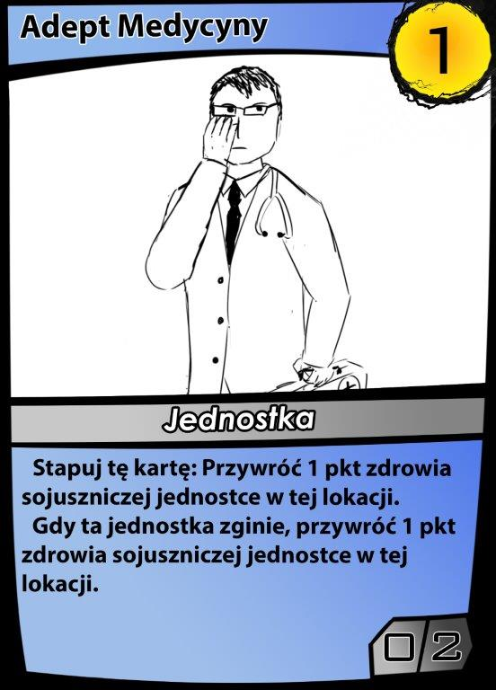
Adept Medycyny
 Afargam, Władca Etheru
Afargam, Władca Etheru
 Angelo, Superżołnierz
Angelo, Superżołnierz
 animos, ostatni drzewiec
animos, ostatni drzewiec
 arcanimus, obrońca dzikiej magii
arcanimus, obrońca dzikiej magii
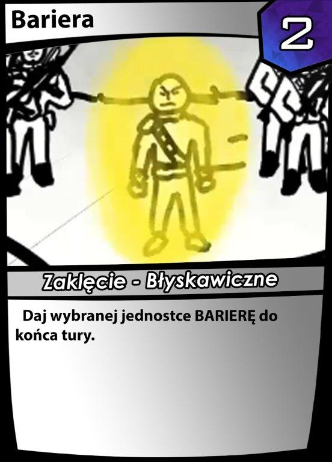
bariera
 biomechaniczna abominacja
biomechaniczna abominacja
 biomechaniczny koszmar
biomechaniczny koszmar
 brom, zapomniany golem
brom, zapomniany golem
 centrum biomechaniki
centrum biomechaniki
 centrum odkrywcze
centrum odkrywcze
 centrum operacyjne
centrum operacyjne
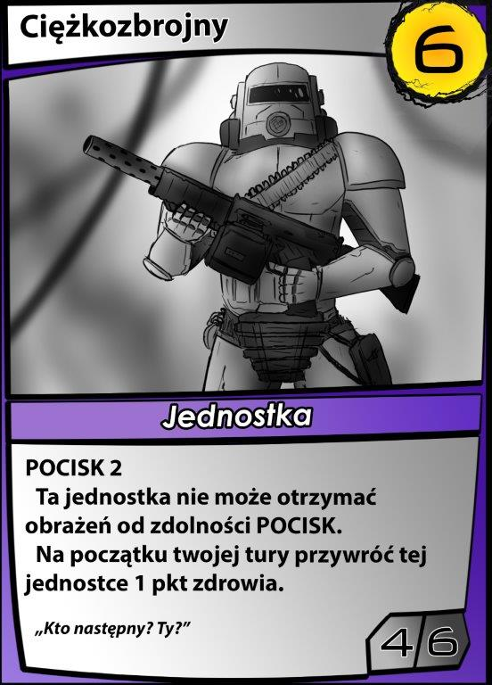
ciężkozbrojny
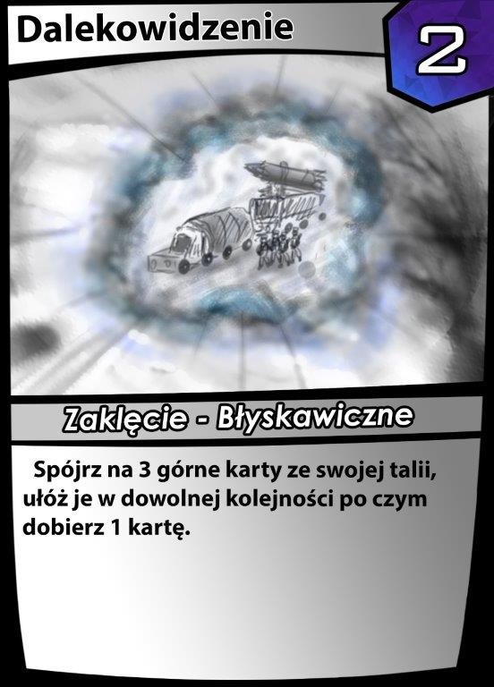
dalekowidzenie
 deklaracja wojny
deklaracja wojny
 demoniczny pakt
demoniczny pakt
 demoniczny prorok
demoniczny prorok
 deus, machina wojenna
deus, machina wojenna
 deverick, arcymag
deverick, arcymag
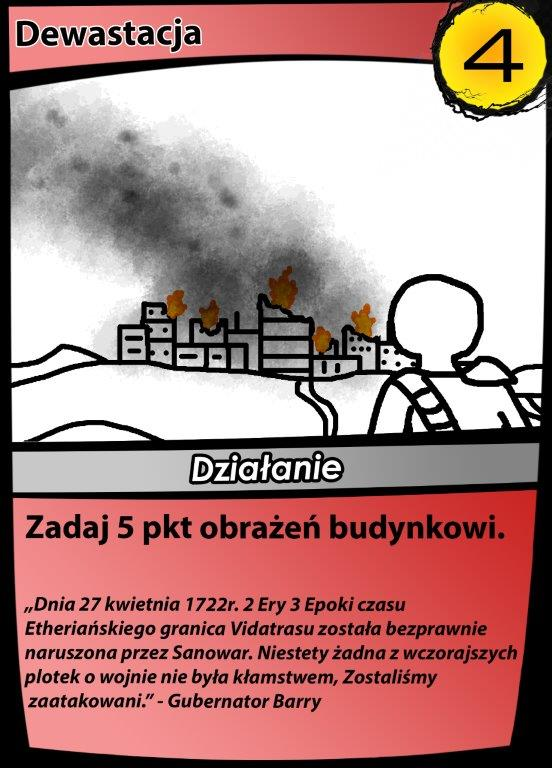
Dewastacja
 doktrian, nieumarły tyran
doktrian, nieumarły tyran
 działko strażnicze
działko strażnicze
 edward, bohater vidatrasu
edward, bohater vidatrasu
 elektrownia jądrowa
elektrownia jądrowa
 ekektryczna strefa
ekektryczna strefa
 erupcja magii
erupcja magii
 fabryka konstruktów
fabryka konstruktów
 fabrykator min
fabrykator min
 farin, zamaskowany zabójca
farin, zamaskowany zabójca
 farma wiatrowa
farma wiatrowa
 generał goldfrey
generał goldfrey
 kamienna inkarnacja
kamienna inkarnacja
 karlos, wielki generał
karlos, wielki generał
 kojący deszcz
kojący deszcz
 kornelius Ion, prekursor postępu
kornelius Ion, prekursor postępu
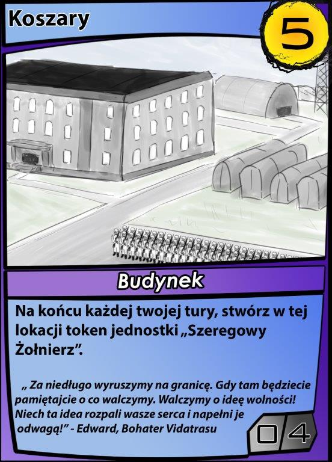
koszary
 kościany łucznik
kościany łucznik
 królewski gwardzista
królewski gwardzista
 kula ognia
kula ognia
 lekhratal, krwiopijca
lekhratal, krwiopijca
 leon, geniusz
leon, geniusz
 Hildebrand, upadły mag
Hildebrand, upadły mag
 logan, szkarłatny mag
logan, szkarłatny mag
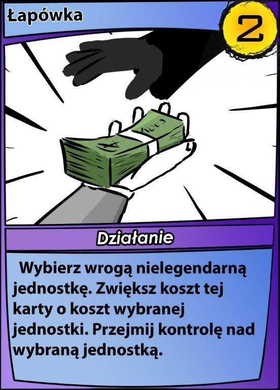
łapówka
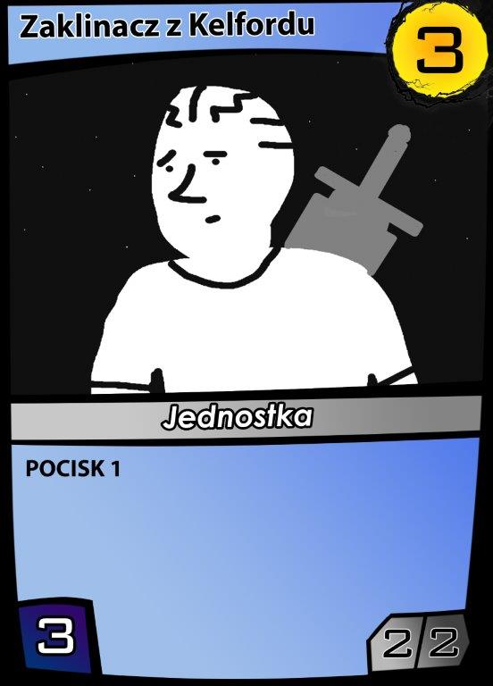
zaklinacz z kelfordu
 mobilizacja do armii
mobilizacja do armii
 Magazyn Energii
Magazyn Energii
 Magiczny Krąg
Magiczny Krąg
 Magiczny Pocisk
Magiczny Pocisk
 Malkolm, kreator
Malkolm, kreator
 marny szkielet
marny szkielet
 marsz potępionych
marsz potępionych
 matias, agent sanowaru
matias, agent sanowaru
 medyk polowy
medyk polowy
 miguel, regent vidatrasu
miguel, regent vidatrasu
 mistrz inkarnacji
mistrz inkarnacji
 mistyczne obserwatorium
mistyczne obserwatorium
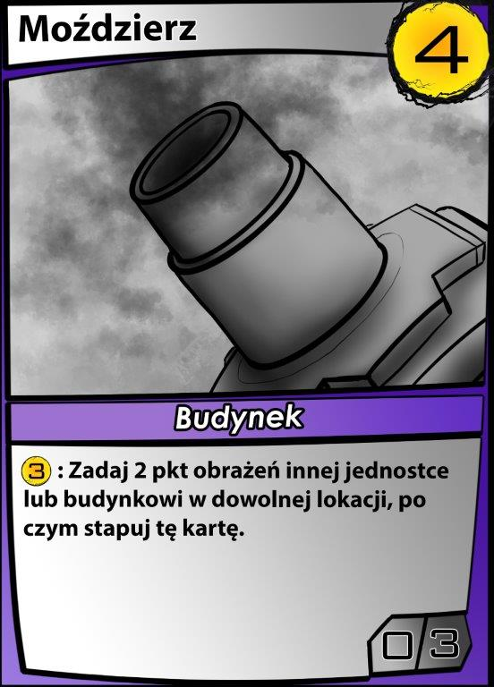
moździerz
 mury obronne
mury obronne
 narada wojenna
narada wojenna
 nieumarły mag bitewny
nieumarły mag bitewny
 ognista inkarnacja
ognista inkarnacja
 obrona przeciwlotnicza
obrona przeciwlotnicza
 odesłanie
odesłanie
 oktavian Ion, odnowiciel
oktavian Ion, odnowiciel
 oszalały prorok
oszalały prorok
 ołtarz dusz
ołtarz dusz
 panel słoneczy
panel słoneczy
 perystofeles, przebiegły demon
perystofeles, przebiegły demon
 plugawe monstrum
plugawe monstrum
 pocisk cienia
pocisk cienia
 podstęny układ
podstęny układ
 pole minowe
pole minowe
 powietrzna inkarnacja
powietrzna inkarnacja
 profesor biomechaniki
profesor biomechaniki
 promień śmierci
promień śmierci
 przebłysk geniuszu
przebłysk geniuszu
 przeszukiwanie umysłu
przeszukiwanie umysłu
 robot zniszczenia
robot zniszczenia
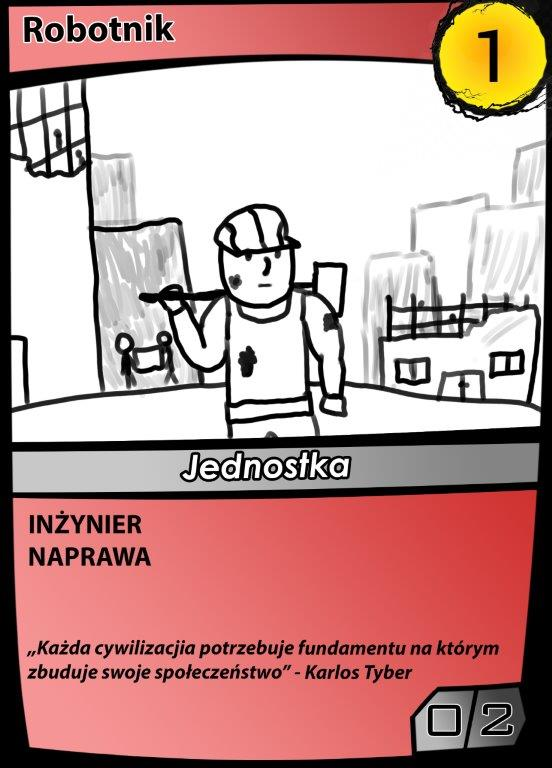
robotnik
 samolot desantowy
samolot desantowy
 Strażnik Afargamu
Strażnik Afargamu
 Strażnik Bramy
Strażnik Bramy
 Syriusz Glenn
Syriusz Glenn
 Szeregowy żołnierz
Szeregowy żołnierz
 szkoła magii
szkoła magii
 ściana ze zwłok
ściana ze zwłok
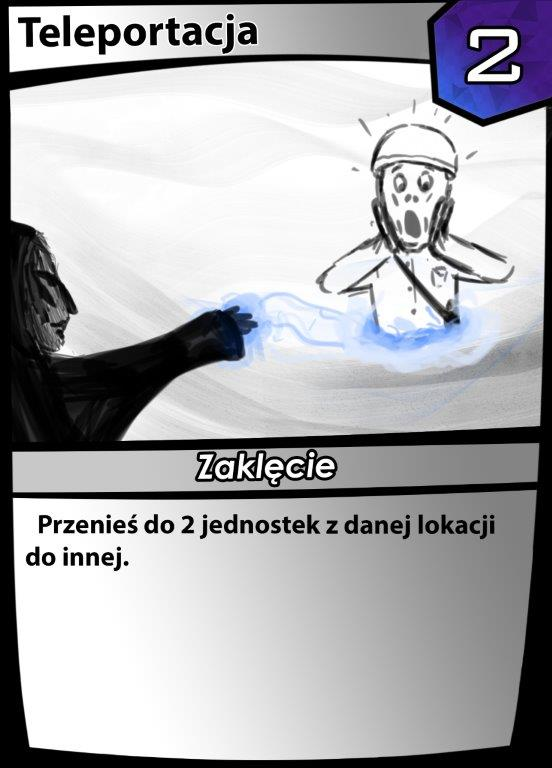
Teleportacja
 Tomisław, Ambasador eliota
Tomisław, Ambasador eliota
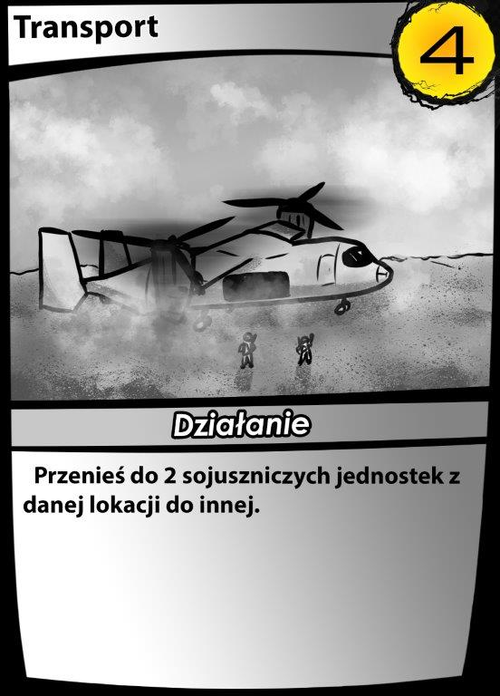
transport
 uczony w magii
uczony w magii
 upierdliwy diablik
upierdliwy diablik
 Viglax, patogen
Viglax, patogen
 wezwanie żywiołu
wezwanie żywiołu
 whrexial, Nieokiełznany gniew
whrexial, Nieokiełznany gniew
 wodna inkarnacja
wodna inkarnacja
 wskrzeszenie poległych
wskrzeszenie poległych
 wybuch astralnej energii
wybuch astralnej energii
 wygnany inkwizytor
wygnany inkwizytor
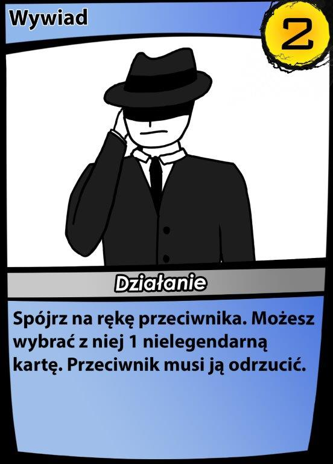
wywiad
 xolgothan, zwiastun zagłady
xolgothan, zwiastun zagłady
 zagubiona dusza
zagubiona dusza
 zaklinacz z Ulburn
zaklinacz z Ulburn
 zamknięcie w innym wymiarze
zamknięcie w innym wymiarze
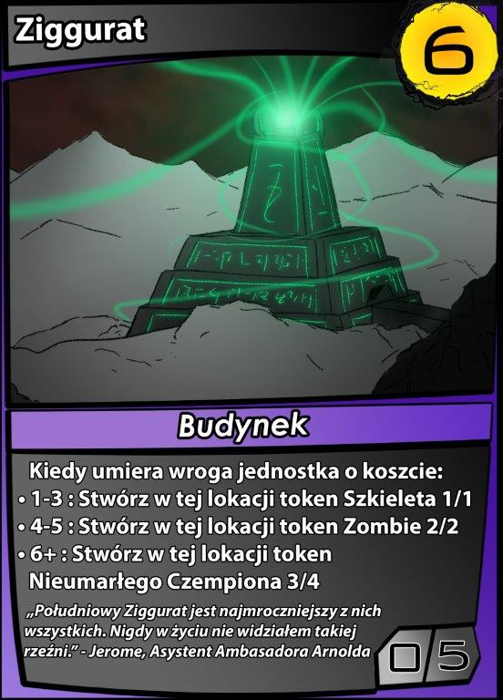
Ziggurat
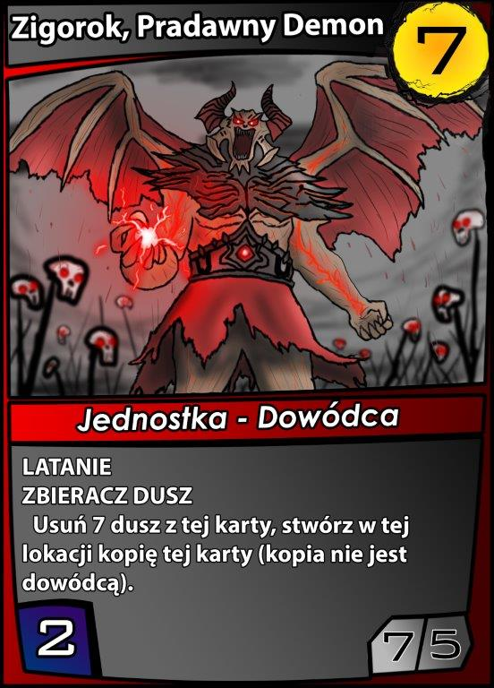
Zigorok-Enraged
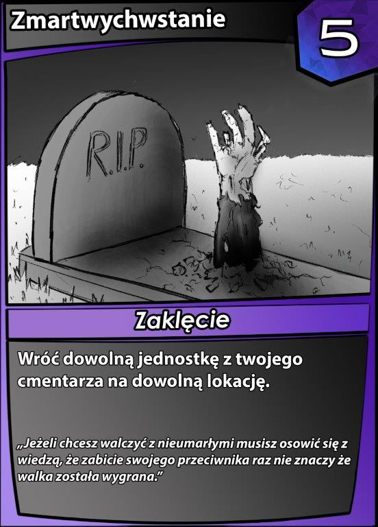
Zmartwychwstanie
 Złudzenie
Złudzenie
 Żniwiarz dusz
Żniwiarz dusz
 żołnierz etheru
żołnierz etheru
 żołnierz sanowaru
żołnierz sanowaru
 Biomechaniczne szczątki
Biomechaniczne szczątki
 brom, spaczony golem
brom, spaczony golem
 konstrukt 1
konstrukt 1
 konstrukt 2
konstrukt 2
 konstrukt 3
konstrukt 3
konstrukt 4
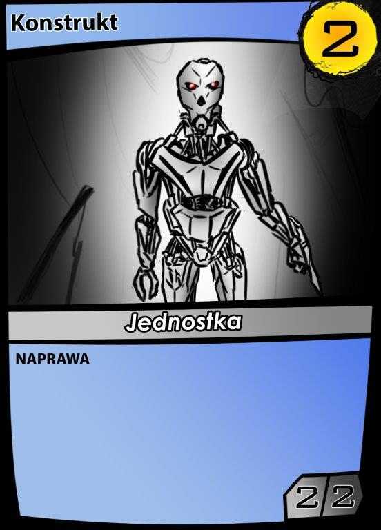
konstrukt 5
 magiczna inkarnacja
magiczna inkarnacja
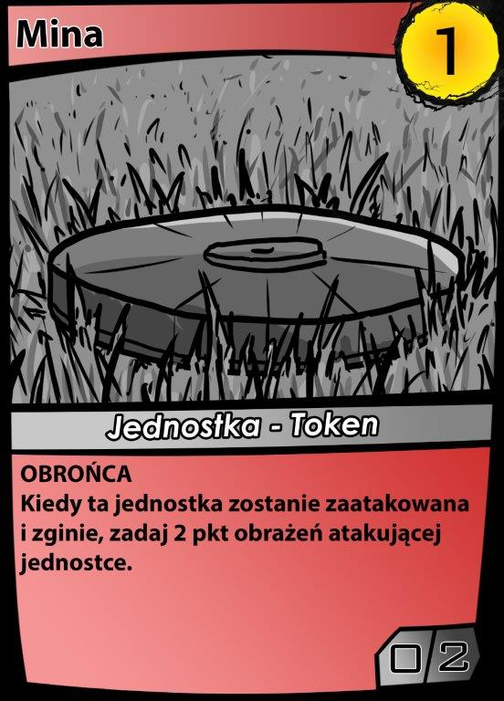
mina
 nieumarły czempion
nieumarły czempion
 syriusz, przebudzony
syriusz, przebudzony
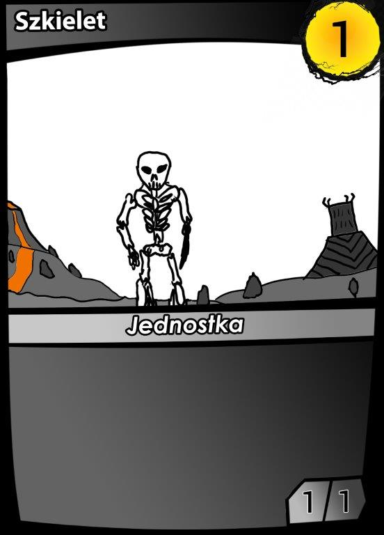
szkielet
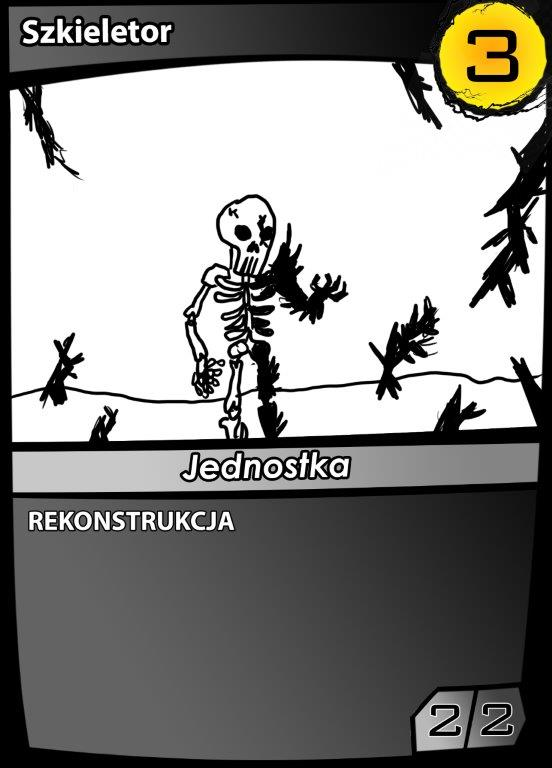
szkieletor
 wojownik Yen'ma
wojownik Yen'ma
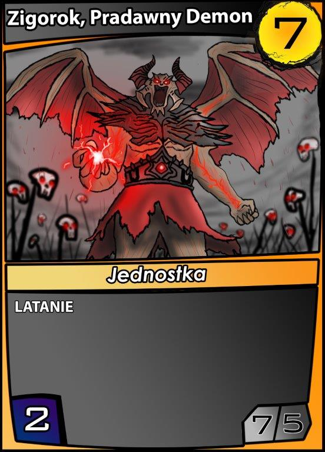
zigorok, pradawny demon - kopia
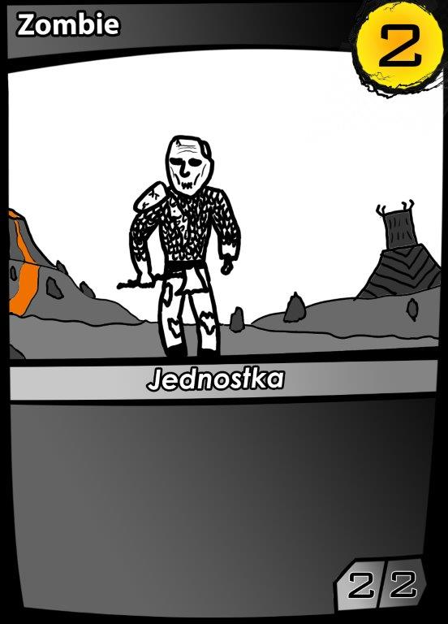
zombie